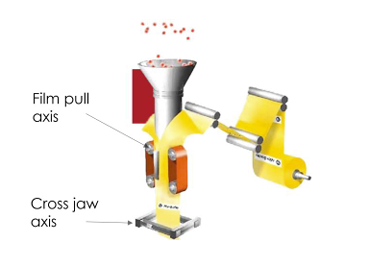
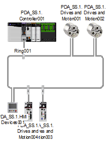
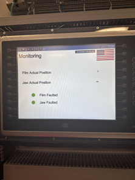
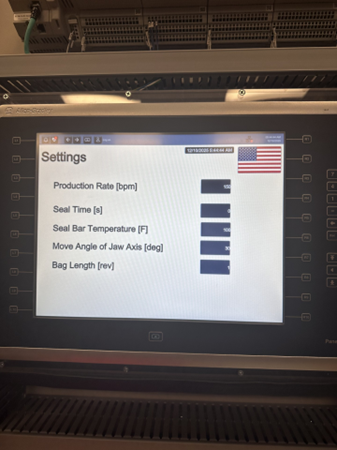
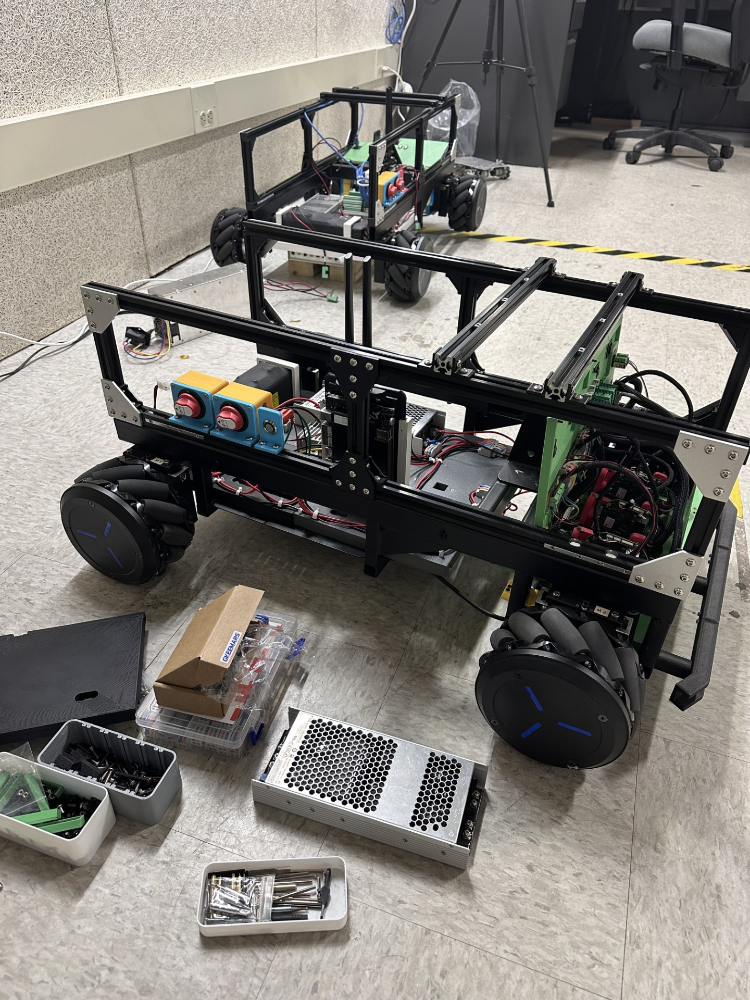
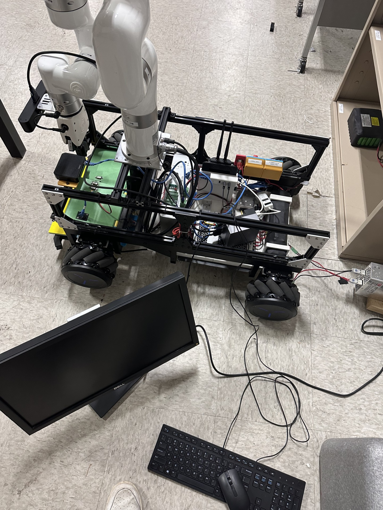
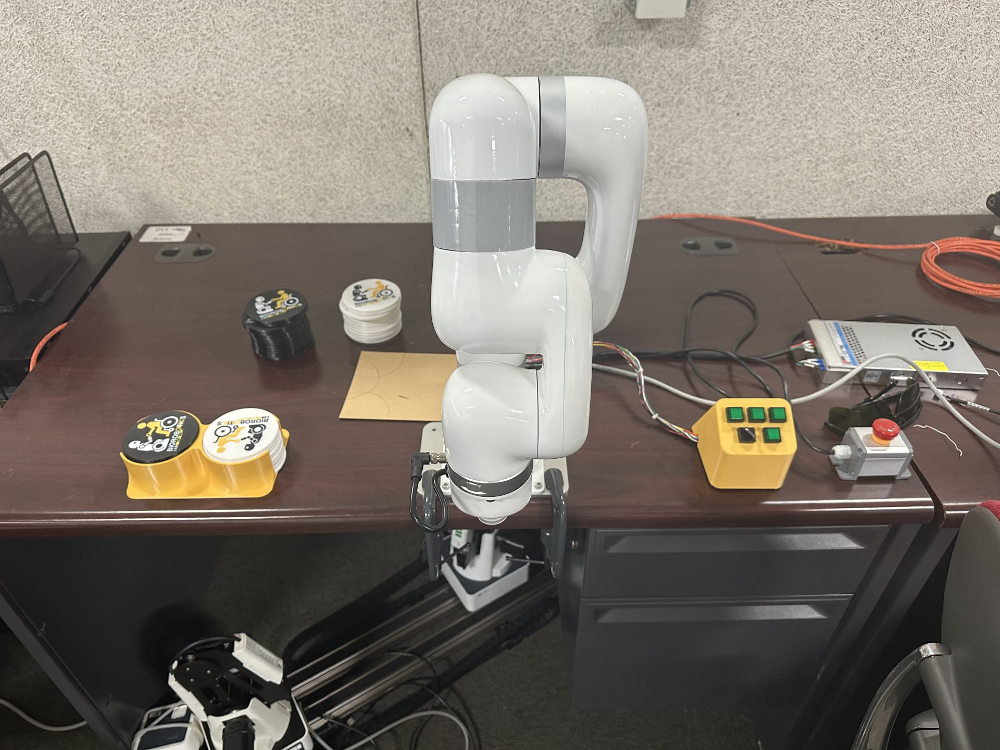

Experience
Electrical Engineering Intern — Komatsu
Summer 2026 (Incoming)
Incoming Electrical Engineering Intern on the drills team, focused on industrial electrical systems, hardware design, and manufacturing applications. The role involves working with electrical schematics, component evaluation, and system-level integration in a heavy equipment environment.
Projects
High-Speed Servo-Controlled VFFS Packaging System

System Overview:
Designed and implemented a two-axis servo-driven vertical form fill and seal (VFFS) packaging system using industrial motion control and PLC architecture. The system integrates coordinated motion, closed-loop temperature regulation, and operator-defined production parameters to support high-speed, repeatable, and flexible packaging operation.
System Overview: The machine automates the process of feeding packaging film, forming it into a vertical tube, pulling the film by a user-defined bag length, closing heated cross jaws to create a seal, holding for a defined seal time, and repeating the cycle continuously at an operator-selected production rate.
Automation Architecture: The control system consists of a centralized controller, servo drives, industrial HMI, and Ethernet-based communication between devices. The controller manages machine sequencing, including heater startup, homing, start/stop production, and fault handling, while also generating motion commands for the film pull axis and cross jaw axis.
Motion Control: The system uses servo-based motion control to achieve precise indexing, repeatable jaw actuation, and smooth motion profiles. A 5th-order polynomial CAM profile was selected because it provides continuous position, velocity, acceleration, and jerk, reducing vibration and improving motion consistency compared to trapezoidal, sinusoidal, and cubic alternatives.
Drive and Motor Selection: Servo motors were chosen over induction motors because the application requires accurate cyclic indexing, high dynamic response, tight speed regulation, and repeatable programmable motion profiles. The selected drive and motor sizing met the required continuous and peak current ratio criteria for proper matching.
HMI Development: Developed a human-machine interface in FactoryTalk View to support production control, heater control, fault clearing, recipe parameter adjustment, monitoring, and trending. The interface allows operators to start and stop production, adjust bag length, seal time, seal bar temperature, jaw move angle, and production rate, while also viewing axis position, axis faults, and real-time trend data for velocity and current feedback.
Performance Improvement: Reduced peak-to-peak position following error from approximately 0.064 to 0.0031 through manual tuning with velocity feedforward enabled at 100%, resulting in an improvement of about 20 times in tracking accuracy.
Tools and Technologies: Rockwell Studio 5000, FactoryTalk View, FactoryTalk Linx, EtherNet/IP, Kinetix servo drives, servo motors, industrial HMI, encoder feedback, and PID temperature control.
System Architecture: The system uses a centralized controller communicating with servo drives and the HMI over EtherNet/IP. The controller manages sequencing and motion commands while drives execute cascaded control loops.

HMI Development: Developed in FactoryTalk View to enable production control, parameter adjustment, monitoring, and fault handling. The interface allows operators to control machine operation and visualize real-time system behavior.
HMI Monitoring Screen:

HMI Settings Screen:

Mobile Robot Platform with Vision and Sensor Integration
System Overview:

Developed a modular mobile robot platform in a research lab environment, integrating motor drives, power distribution, and sensor systems for autonomous navigation and future expansion. The system was designed to support mecanum wheel motion, onboard sensing, and scalable hardware integration for robotics applications.
Motor Drive and Motion System: Integrated motor drives with mecanum wheels to enable omnidirectional movement. Supported system-level wiring and layout of drive connections to ensure reliable power delivery and signal integrity across the drivetrain.
Power Distribution: Designed and implemented the electrical power layout for the robot, including routing power to motor drives, control electronics, and sensor systems. Focused on clean wiring organization and reliable distribution to support stable system operation.
Vision and Sensing: Integrated vision and sensing components including a Keyence camera system and LiDAR. These systems enable environmental perception, object detection, and future localization and navigation capabilities. Supported physical integration and system-level connectivity for these sensors.

Mechanical Integration: Contributed to mechanical design and mounting solutions using CAD and 3D printing to support motor drives, sensors, and structural components. Ensured proper alignment and secure mounting of critical hardware.
My Role:
- Designed and implemented system wiring for motor drives and power distribution
- Assisted with integration of sensors including camera and LiDAR systems
- Contributed to mechanical mounting and structural layout using CAD and 3D printing
- Supported system-level testing and iterative hardware improvements
Technologies and Tools: Motor drives, mecanum wheel systems, electrical wiring and power distribution, Keyence vision systems, LiDAR sensors, CAD design, and 3D printing.
XArm Robot Coaster Dispenser Demo

System Overview:
Developed an interactive robot arm demonstration using the UFactory XArm 6 to dispense coasters based on user input. The system was designed for a live event environment, allowing users to select options and receive a coaster through an automated pick-and-place sequence.
Control System: Implemented robot control in Python to execute pick-and-place motions, handle user input, and manage different selection states. The program dynamically adjusted motion behavior based on user interaction.
I/O Integration: Integrated external push buttons using the robot’s digital inputs to allow real-time user interaction. Button presses triggered different dispensing actions and controlled system flow.
System Challenges: Accounted for changing stack height of coasters by adjusting pick positions over time, ensuring consistent and reliable grasping throughout operation.
My Role:
- Developed Python control logic for robot motion and interaction
- Integrated digital input signals for user control
- Designed and tested pick-and-place behavior for reliability in a live demo setting
Tools and Technologies: Python, UFactory XArm 6, robot digital I/O, pick-and-place automation.
about
i’m an electrical engineering student interested in industrial controls, motion systems, and robotics.
Contact
Email: foxma@uwm.edu
Phone: (262) 229-1388
LinkedIn: Mitch Fox
GitHub: Mitchfox1